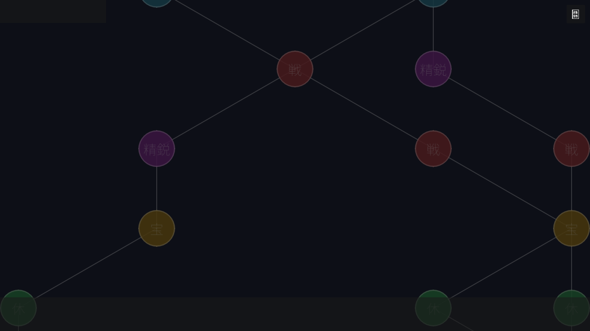
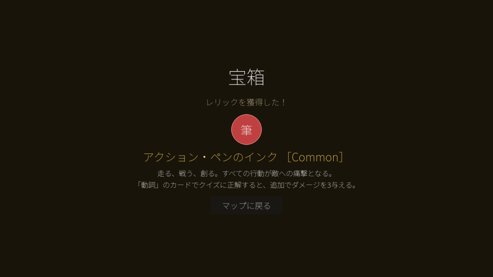
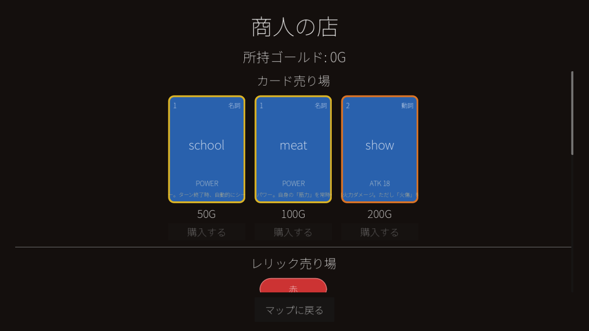
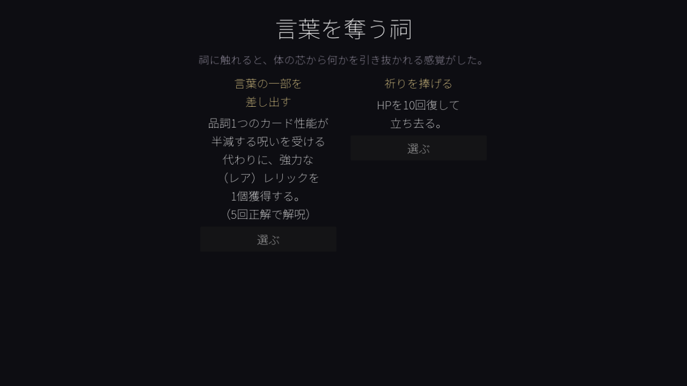
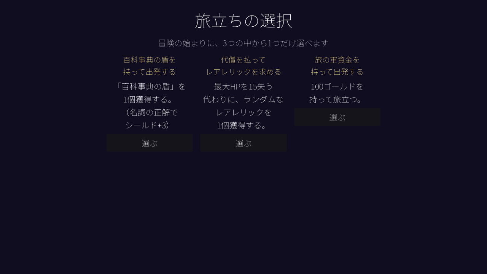
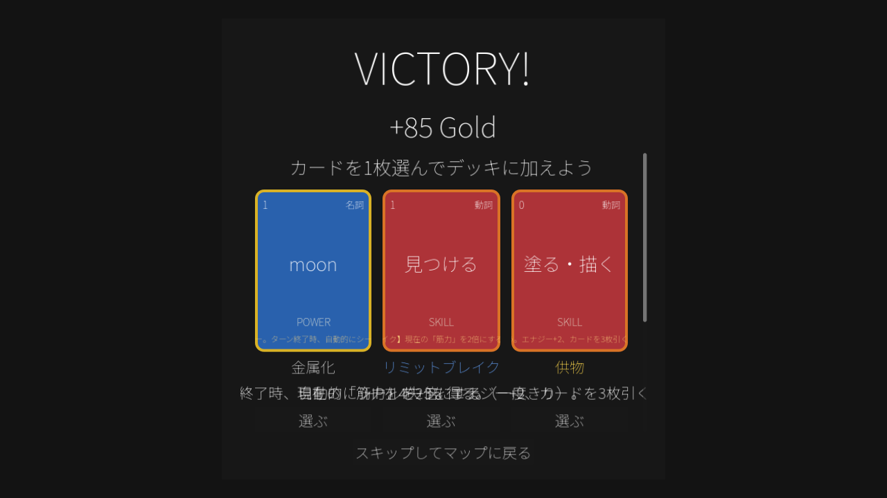

マップとモード
マップの構造と、各マスで発生するイベントを解説します。
マップの構造
1回のラン（周回）につき、マップは16階層（0〜15階）で構成されます。最初の1歩は必ず戦闘マスから始まり、3〜4本のルートが枝分かれ・合流しながら進み、最終的にすべてのルートが最上階（15階）の単一のボスマスへ収束します。行き止まりは発生しません。
- 7階：休憩マスが必ず配置されます（現在準備中の機能です）
- 8階：宝箱マスが必ず配置されます
- 11階：ショップマスが必ず配置されます
- 8階以降：エリートマスが出現するようになります
それ以外の階では、戦闘・？イベント・ショップ・休憩のいずれかが確率で配置されます。

マップは下から上へ進みます。ノードの色と文字でマスの種類が一目で分かります。
マスの種類
⚔ 戦闘
通常の敵と戦います。ゲーム内の通算勝利数に応じて、ギミックを持たない易しい敵編成（Easyプール）から、品詞相性やギミックを持つ手強い編成（Hardプール）へ自動的に切り替わります。勝利するとゴールドと、3枚から1枚選べるカード報酬を獲得できます。
精鋭 エリート
通常戦闘より強化された敵と戦う、リスクの高いマスです。勝利すると、カード報酬に加えてコモンまたはアンコモンのレリックを1個確定で獲得できます。
ボス
各ルートの最終到達点にある、そのActで最も強い敵です。3種類のボスからランダムに1体が出現します。勝利するとレア・レリックを3択から1個選んで獲得できます。
宝 宝箱
タップすると開封演出のあと、レアリティ抽選（Common 60% / Uncommon 30% / Rare 10%）でレリックを1個、確定で獲得できます。1回の訪問につき1個だけです。

宝箱はタップするだけでレリックが1個手に入ります。
店 商人の店（ショップ）
ゴールドを使って以下の3つのサービスを利用できます。
- 特殊カードの購入：コモン（50G）・アンコモン（100G）・レア（200G）が各1枚並びます。
- レリックの購入：レアリティ抽選（Common 55% / Uncommon 35% / Rare 10%）の1枠。価格はコモン150G・アンコモン250G・レア350Gです。
- カード除去サービス：デッキから1枚を選んで100Gで完全に削除できます。1回の訪問につき1回までです。

カード・レリックの購入とカード除去サービスが1画面で利用できます。
？ イベント
「？」マスでは、以下の2種類のテキストイベントのどちらかがランダムに発生します。
- 狂った辞書編纂者：英単語クイズに3問連続で正解するか、150ゴールドを支払うことでレリックを1個獲得できます。クイズに失敗すると、現在HPの20%のダメージを受けます。
- 言葉を奪う祠：「品詞1つのカード性能が半減する呪い」を受ける代わりに強力なレア・レリックを1個獲得するか、祈りを捧げてHPを10回復するかを選べます。呪いは、該当の品詞のカードで5回正解すると解除されます。

「言葉を奪う祠」イベント。呪いと引き換えに強力なレリックを得るか、安全に回復するかを選びます。
休 休憩
ラン開始直後の「旅立ちの選択」
ラン（周回）を開始すると、マップに進む前に3択のボーナスイベントが表示されます。
- 百科事典の盾を持って出発する：スターターレリック「百科事典の盾」を1個獲得
- 代償を払ってレアレリックを求める：最大HPを15失う代わりに、ランダムなレア・レリックを1個獲得
- 旅の軍資金を持って出発する：100ゴールドを持って出発

ラン開始直後に必ず表示される3択イベントです。
戦闘勝利後の報酬
戦闘に勝利すると、ゴールドと3枚のカードからの1択（スキップ可）が表示されます。カードのレアリティ抽選はCommon 60% / Uncommon 30% / Rare 10%です。エリート戦の場合はレリックが確定で付与され、ボス戦の場合はレア・レリックの3択が追加で表示されます。

勝利画面。ゴールドとカード報酬（レリック報酬がある場合はそれも）がまとめて表示されます。
ラン終了後の要素
クイック復習（リベンジテスト）
ランが終了すると、その周回中に間違えた英単語だけを使った復習戦闘に挑戦できます。攻撃してこない訓練用の的が相手なので、安心して苦手な単語を復習できます。
ランキング
到達度を中心としたスコアが記録され、歴代のランキングとして確認できます。